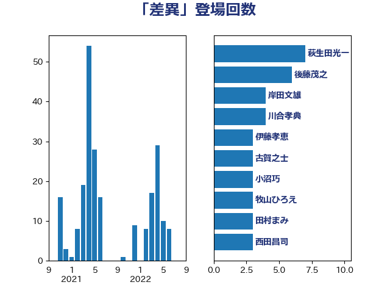

単語「差異」

| 萩生田光一 | 自由民主党 | 7 回 |
| 後藤茂之 | 自由民主党 | 6 回 |
| 岸田文雄 | 自由民主党 | 4 回 |
| 川合孝典 | 国民民主党 | 4 回 |
| 伊藤孝恵 | 国民民主党 | 3 回 |
| 古賀之士 | 立憲民主党 | 3 回 |
| 小沼巧 | 立憲民主党 | 3 回 |
| 牧山ひろえ | 立憲民主党 | 3 回 |
| 田村まみ | 国民民主党 | 3 回 |
| 西田昌司 | 自由民主党 | 3 回 |
| 三浦信祐 | 公明党 | 2 回 |
| 上川陽子 | 自由民主党 | 2 回 |
| 伊波洋一 | 無所属 | 2 回 |
| 古川禎久 | 自由民主党 | 2 回 |
| 城井崇 | 立憲民主党 | 2 回 |
| 寺田学 | 立憲民主党 | 2 回 |
| 山添拓 | 日本共産党 | 2 回 |
| 川田龍平 | 立憲民主党 | 2 回 |
| 斉藤鉄夫 | 公明党 | 2 回 |
| 林芳正 | 自由民主党 | 2 回 |
| 橋本岳 | 自由民主党 | 2 回 |
| 野田聖子 | 自由民主党 | 2 回 |
| 高良鉄美 | 無所属 | 2 回 |
| 伴野豊 | 立憲民主党 | 1 回 |
| 吉良よし子 | 日本共産党 | 1 回 |
| 坂本哲志 | 自由民主党 | 1 回 |
| 堀内詔子 | 自由民主党 | 1 回 |
| 塩川鉄也 | 日本共産党 | 1 回 |
| 大島敦 | 立憲民主党 | 1 回 |
| 大西健介 | 立憲民主党 | 1 回 |
| 守島正 | 日本維新の会 | 1 回 |
| 小宮山泰子 | 立憲民主党 | 1 回 |
| 山下雄平 | 自由民主党 | 1 回 |
| 山岡達丸 | 立憲民主党 | 1 回 |
| 岡本あき子 | 立憲民主党 | 1 回 |
| 平井卓也 | 自由民主党 | 1 回 |
| 打越さく良 | 立憲民主党 | 1 回 |
| 末松信介 | 自由民主党 | 1 回 |
| 柳本顕 | 自由民主党 | 1 回 |
| 武田良太 | 自由民主党 | 1 回 |
| 池下卓 | 日本維新の会 | 1 回 |
| 河野太郎 | 自由民主党 | 1 回 |
| 泉田裕彦 | 自由民主党 | 1 回 |
| 津島淳 | 自由民主党 | 1 回 |
| 浜野喜史 | 国民民主党 | 1 回 |
| 熊田裕通 | 自由民主党 | 1 回 |
| 玉木雄一郎 | 国民民主党 | 1 回 |
| 田所嘉徳 | 自由民主党 | 1 回 |
| 田村憲久 | 自由民主党 | 1 回 |
| 田畑裕明 | 自由民主党 | 1 回 |
| 矢倉克夫 | 公明党 | 1 回 |
| 磯崎仁彦 | 自由民主党 | 1 回 |
| 神津たけし | 立憲民主党 | 1 回 |
| 福重隆浩 | 公明党 | 1 回 |
| 秋野公造 | 公明党 | 1 回 |
| 竹内譲 | 公明党 | 1 回 |
| 簗和生 | 自由民主党 | 1 回 |
| 美延映夫 | 日本維新の会 | 1 回 |
| 舟山康江 | 国民民主党 | 1 回 |
| 茂木敏充 | 自由民主党 | 1 回 |
| 藤原崇 | 自由民主党 | 1 回 |
| 藤田文武 | 日本維新の会 | 1 回 |
| 豊田俊郎 | 自由民主党 | 1 回 |
| 逢沢一郎 | 自由民主党 | 1 回 |
| 野上浩太郎 | 自由民主党 | 1 回 |
| 鈴木義弘 | 国民民主党 | 1 回 |
| 鈴木貴子 | 自由民主党 | 1 回 |
| 阿部知子 | 立憲民主党 | 1 回 |
| 青山大人 | 立憲民主党 | 1 回 |
| 音喜多駿 | 日本維新の会 | 1 回 |
| 高木啓 | 自由民主党 | 1 回 |
| 鰐淵洋子 | 公明党 | 1 回 |
| 鷲尾英一郎 | 自由民主党 | 1 回 |